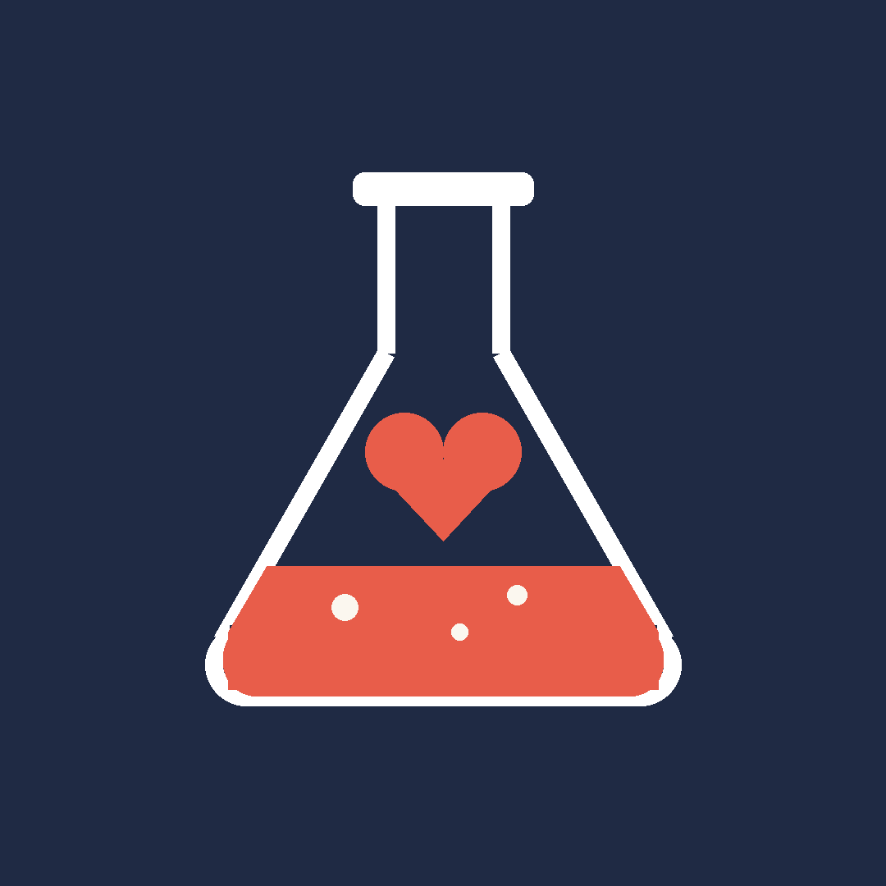

こころ実験室
@matrix.neo1989
職場と人間関係の「なぜ？」を、心理学の研究で解説しています。投稿で紹介した研究の出典と、もっと深く知りたい人向けの本をまとめました。
【PR】このページには広告（アフィリエイトリンク）が含まれます。リンク経由で購入・申込があると、運営者に紹介料が入ることがあります。
もっと知りたい人へ：おすすめの本
ファスト＆スローダニエル・カーネマン「最後で印象が決まる」ピーク・エンドの法則の研究者本人による解説。人の判断のクセを知る定番の1冊Amazonで見る →影響力の武器ロバート・B・チャルディーニ人が「つい動いてしまう」心理を実験で解説。職場の頼みごと・交渉にそのまま使えるAmazonで見る →予想どおりに不合理ダン・アリエリー人の行動の「なぜ？」をユニークな実験で解き明かす。心理学の入門として読みやすいAmazonで見る →投稿で紹介した研究（出典）
2026/11/20会話のあと一人反省会する人の共通点
投稿を見る →出典
2026/11/19約3回に1回は明らかな誤答に合わせていた
投稿を見る →出典
- doi.org
- doi.org
- doi.org
- Griggs, R. A. (2015). Teaching of Psychology, 42(2), 137-142.
- bps.org.uk
2026/11/18仕事を一人で抱え込む人の共通点
投稿を見る →出典
2026/11/17なぜ「最後」で印象が決まるのか？
投稿を見る →出典
- cir.nii.ac.jp
- ius.uzh.ch
- Kahneman, D., Fredrickson, B. L., Schreiber, C. A., & Redelmeier, D. A. (1993). Psychological Science, 4(6), 401–405.
2026/11/17なぜ人の目がこんなに気になるのか？
投稿を見る →出典
- www.psychologytoday.com
- cornellalumnimagazine.com
- Gilovich, T., Medvec, V. H., & Savitsky, K. (2000). Journal of Personality and Social Psychology, 78(2), 211–222.
2026/11/16なぜ会議では誰も発言しないのか？
投稿を見る →出典
- sk.sagepub.com
- mason.gmu.edu
- kirkwood.pressbooks.pub
- Latané, B., Williams, K., & Harkins, S. (1979). Journal of Personality and Social Psychology, 37(6), 822–832.